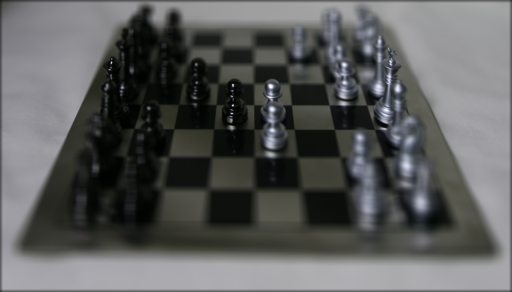
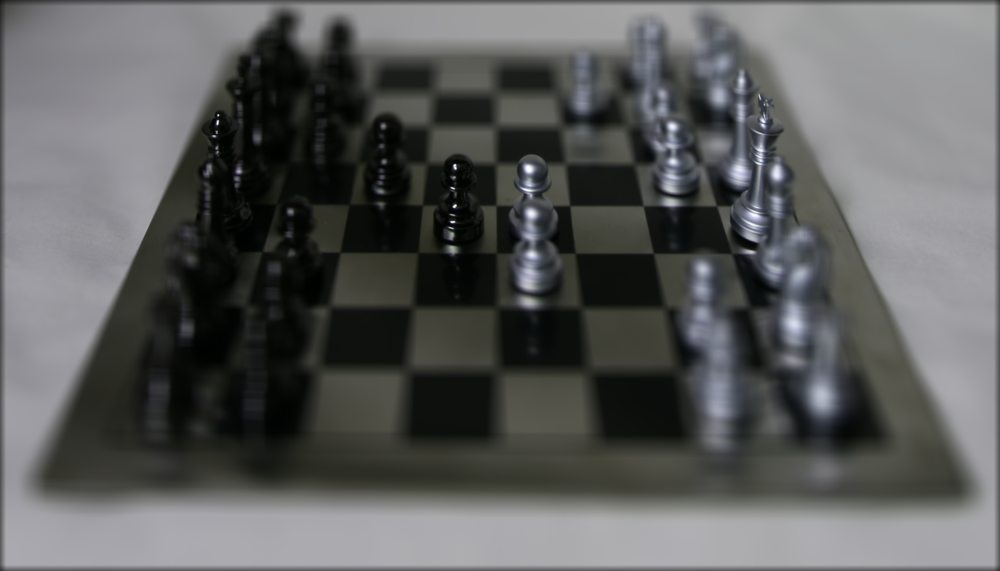

CS180 Final Project 2: Light Field Camera
I present my results on the pre-canned project light field cameras. In this project, I learned about light field cameras which capture the intensity and direction of light rays in a scene, allowing them to record not only color and brightness but also the angle at which light enters the camera. From this data we can do cool post-capture adjustments such as refocusing, changing the depth of field, and even altering the perspective using algorithms that interpolate the captured light field to create images corresponding to various focal planes or viewpoints.
Part 1: Depth Refocusing
In part 1, I implemented depth refocusing. I start by processing the 289 images from the Stanford Light Field Archive by extracting the (x,y) position for each image. Using these coordinates, I can shift and average all the images to achieve a refocusing effect. With no shifting (C = 0), the focus is on the far-away objects because objects which are far away from the camera do not vary their position significantly when the camera moves. I set the center image to be at position (8, 8) and shift each of the other images to be aligned with this center image multiplied by a shifting factor C. By increasing C, I can alter the depth so that the closer objects come into focus. The results are shown below:
C = 0.0 (left), C = 0.8 (middle), C = 2.0 (right)
Below, I present a gif showing the transition from C = -0.4 to 2.0 with a step size of 0.2:

Part 2: Aperture Adjustment
In part 2, I implemented aperture adjustment. To adjust the aperture, I use a similar process as depth refocusing, except I only average a subset of the images given. For example, using only the center (8, 8) image with aperture = 0 would yield a clear image (similar to a pinhole camera). As I increase the aperture, I am using more images, causing a smaller range of the photo to appear in focus. That is, if I set the aperture to 3, then I use all the images within 3 coordinates of the center (8, 8). Below, I visualize my results:
Aperture = 0 (left), Aperture = 7 (middle), Aperture = 14 (right)
 

Below, I present a gif showing the transition in aperture from 0 to 14 pixels with a step size of 1: